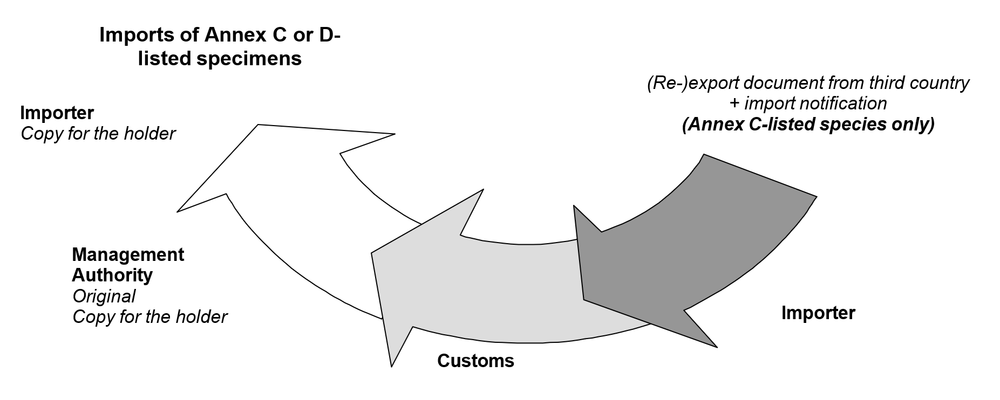
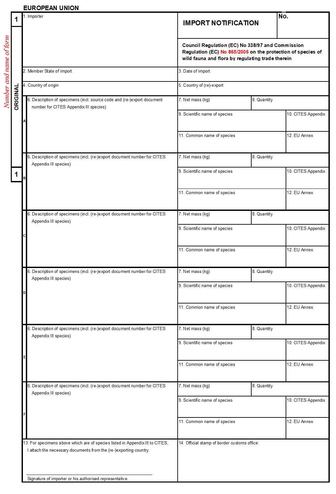

For species listed in Annex C or D, import notifications are required for import into the EU1 (see Figure 4 for procedure).
For species listed in Annex C and Appendix III of CITES, (re-)export documents must be obtained and presented together with the import notification2. For Appendix III-listed species, where export is from the country having listed the species in Appendix III, an export permit is required3. Where export is from any other country, a certificate of origin is sufficient4. However, for re-exported specimens of Appendix III-listed species, a re-export certificate will be needed5. No documents are however required if the specimens originate from a population that is not included in Appendix III and Annex C (for those species where only a national population of a species is included in CITES).
The forms to be used for import notifications are contained in Annex II to Regulation (EU) No 792/2012 and can be obtained from the competent authorities of each Member State (see also the annotated import notification in Figure 5). The importer or his/her authorised representative completes boxes 1 to 13 of the original and the copy for the importer in accordance with the instructions given at the back of the forms, and surrenders them to a designated border Customs office at the first point of introduction into the EU6.
Export permits and re-export certificates will be endorsed, with quantity, signature and stamp, by an official from the export or re- export country, in the export endorsement block of the document. If the export document has not been endorsed at the time of export, the management authority of the importing country should liaise with the exporting country’s management authority, considering any extenuating circumstances or documents, to determine the acceptability of the document.7
The transport of live specimens must be in accordance with Article 9(5) of Regulation (EC) No 338/97, which states that: “When any live specimens are transported into, from or within the Community or are held during any period of transit or transhipment, they shall be prepared, moved and cared for in a manner such as to minimise the risk of injury, damage to health or cruel treatment and, in the case of animals, must be in conformity with Community legislation on the protection of animals during transport (see Section 6.1).”
As described above in Section 3.3.3, the transport of all live animals from, into and within the EU is governed by Council Regulation (EC) No 1/2005 of 22 December 2004 on the protection of animals during transport and related operations. However, this does not apply to transport within the EU of animals for distances of less than 50 kilometres nor to the movement of personal pets.
CITES Resolution Conf. 10.21 (Rev. CoP19) on the Transport of Live Specimens recommends that the IATA Live Animals Regulations (for animals), the IATA Perishable Cargo Regulations (for plants) and the CITES guidelines for the non-air transport of live wild animals and plants be deemed to meet CITES transport requirements and should be followed by all CITES Parties as well as (relevant sections) incorporated into national legislation or policies (see Section 6 for further information). Regulation (EC) No 1/2005 provides that animals transported by air must be transported in containers, pens or stalls appropriate for the species, which comply with the IATA Live Animals Regulations8.
In view of the sanctions for non-compliance, it is essential that importers of live specimens adequately inform their (re-)exporters about these transportation requirements (see also Section 6.1).
Figure 4: A simplified procedure for the import of Annex C or D-listed specimens

At the point of introduction into the EU, the Customs office will carry out the necessary checks (as also described in Sections 3.3.7 and 3.5.7), including a review of the necessary documents and, where required by law or otherwise, representative sampling of the shipment (i.e. examination of the specimens and, where appropriate, taking of samples for analysis or more detailed checks).
Customs then completes box 14 of the original and the copy for the importer, returns the latter to the importer (for later proof of legal importation), and the original - together with any document from the (re-)exporting country – is submitted to the Management Authority of the country into which it has been introduced. Original notifications will also be forwarded to the Management Authority of the country of import, when it is different from the country where the specimen was introduced into the EU9. Returning the originals and any related documents to the Management Authority is essential for the compilation of Annual Reports on trade by the Management Authority. The Customs office must inform the Management Authority of their country of any problems with the shipment/permit and consult on next steps (see also Section 3.6).
Figure 5: Annotated import notification form

Summary of key instructions and explanations for import notification forms
(Note: For full instructions and explanations, see Annex II to Regulation (EC) No 792/2012. The numbers below refer to the boxes on the form - see Figure 5.)
Importer: Enter the full name and address of importer or authorized representative.
Member State of import: Enter the name of the Member State into which the specimens are being imported.
Date of import: Enter the date on which the import took place.
Country of origin: The country of origin is the country where the specimens were taken from the wild, born and bred in captivity, or artificially propagated. In the case of plant specimens that were formerly exempt from CITES controls (e.g. seeds or artificially-propagated flasked seedlings), but that ceased to be exempt (e.g. because they were grown further), the country of origin is that country where the exemption ceased to apply.
Country of re-export: Only applies where the country from which the specimens are imported is not the country of origin.
Description of specimens: Description must be as precise as possible.
Net mass (kg): The net weight of the specimens in kilograms.
Quantity: The quantity (count) of specimens.
Scientific name of species: The scientific name must be the name used in Annex C or D to Council Regulation (EC) No 338/97.
CITES Appendix: Enter III for species listed in Appendix III to CITES.
Common name of species: The common name of the species.
EU Annex: Enter the letter (C or D) of the Annex to Council Regulation (EC) No 338/97 in which the species is listed.
For specimens of Annex C-listed species: The importer has to submit the signed original and “copy for the importer”, where appropriate together with CITES Appendix III documents from the (re-) exporting country to the Customs office of introduction into the Union.
Official stamp of border Customs office: The Customs office shall send the stamped ‘original’ to the Management Authority of their country and return the stamped ‘copy for the importer’ to the importer or their authorized representative.
-
Articles 4(3) and 4(4) Regulation (EC) No 338/97. ↩
-
Article 4(3)(a) Regulation (EC) No 338/97. ↩
-
Article 4(3)(a) Regulation (EC) No 338/97 ↩
-
Article 4(3)(b) Regulation (EC) No 338/97 ↩
-
As above. ↩
-
Article 24(1) Regulation (EC) No 865/2006 ↩
-
Article 7(5) Regulation (EC) No 865/2006 ↩
-
Annex I, Chapter II (paragraph 4.1) ↩
-
Article 25 Regulation (EC) No 865/2006 and Article 45(1) Regulation (EC) No 865/2006 ↩